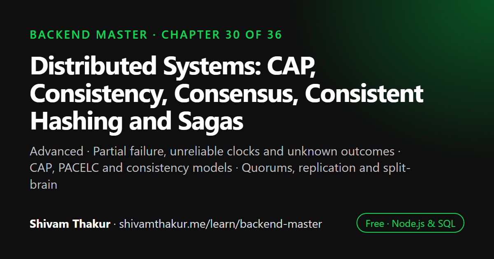

Chapter 30 of 36 · Advanced
Distributed Systems: CAP, Consistency, Consensus, Consistent Hashing and Sagas
Distributed Systems — When One Computer Isn't Enough (and Why That's Hard)

Once a system spans machines, partial failure, unreliable networks and clocks become unavoidable. This chapter explains CAP and PACELC, consistency models, quorums, split-brain, Raft, consistent hashing, fencing tokens, two-phase commit versus sagas and CRDTs. It was written without running the code sketches, which are marked not run.
In this chapter you will learn
- Partial failure, unreliable clocks and unknown outcomes
- CAP, PACELC and consistency models
- Quorums, replication and split-brain
- Raft consensus and consistent hashing
- Fencing tokens, sagas and CRDTs
30.0 Why This Chapter Matters
A single computer has comforting properties: operations happen in one order, a function call either returns or throws, and "now" means the same thing everywhere. The moment your system spans more than one machine, all of those comforts vanish. Leslie Lamport's famous definition: "A distributed system is one in which the failure of a computer you didn't even know existed can render your own computer unusable."
Everything you've built in Part 5 already touches this: load-balanced instances (Chapter 29), replicas with lag, queues with at-least-once delivery (Chapter 28), caches that disagree (Chapter 27). This chapter gives you the mental models to reason about them: the failure modes that are fundamental rather than bugs, and the standard tools (quorums, consensus, consistent hashing, sagas, fencing tokens) that engineers use to live with them.
30.1 The Eight Fallacies and the Fundamental Problems
The Fallacies of Distributed Computing (Peter Deutsch, Sun, 1994): beliefs every newcomer holds, all false:
- The network is reliable. 2. Latency is zero. 3. Bandwidth is infinite. 4. The network is secure. 5. Topology doesn't change. 6. There is one administrator. 7. Transport cost is zero. 8. The network is homogeneous.
From these, three fundamental difficulties follow:
| Problem | Meaning | Example in ShopLine |
|---|---|---|
| Partial failure | Some parts fail while others keep working, and you often can't tell which | Payment API times out: did it charge? (Ch 26) |
| Unreliable networks | Messages can be lost, delayed, duplicated, reordered | Webhook delivered twice (Ch 28) |
| Unreliable clocks | Machines disagree on the time; time can jump | Two servers disagree which write came last |
The core uncertainty: when a request gets no reply, it might be that the request was lost, the server crashed, the server is slow, the reply was lost, or the server did the work and then crashed. From the caller's side these are indistinguishable. All the techniques in this chapter are ways to build something reliable despite that ambiguity: timeouts, retries with idempotency, redundancy, agreement protocols.
30.2 Time and Ordering
Clocks lie
- Wall-clock time (
Date.now()): synchronised by NTP, accurate to milliseconds in good conditions, but it can drift, jump forward or backward (NTP corrections, leap seconds, VM pauses), and two machines are never perfectly in step. - Monotonic clocks (
performance.now(),process.hrtime): only move forward, good for measuring durations on one machine, meaningless across machines.
Consequence: you cannot reliably order events from different machines by comparing their timestamps. A "last write wins" policy based on wall-clock time can silently drop the newer write when the clocks disagree by even a few milliseconds. (Cassandra's default conflict resolution works this way; see §30.5.)
Logical clocks: ordering without wall time
- Lamport timestamps: each node keeps a counter; increment on each event; on receiving a message set
counter = max(local, received) + 1. This gives a causal ordering: if event A could have influenced B, thents(A) < ts(B). It can't tell you whether two events were concurrent. - Vector clocks: one counter per node; comparing vectors tells you whether A happened-before B, B before A, or they were concurrent (a conflict that needs resolving). Used by Dynamo-style stores.
- Hybrid logical clocks (HLC): wall-clock-like timestamps that still respect causality (used by CockroachDB). TrueTime (Google Spanner) exposes clock uncertainty bounds and waits them out to get strong consistency.
Sketch of a Lamport clock (not run):
class Lamport {
constructor() { this.t = 0; }
tick() { return ++this.t; } // local event or send
receive(remote) { this.t = Math.max(this.t, remote) + 1; return this.t; }
}Practical guidance
- Use database-assigned ordering (sequences,
versioncolumns, transaction IDs, Chapter 16) rather than wall-clock timestamps to decide which write wins. - Use monotonic time for timeouts and rate limiters on a single node.
- Treat timestamps from other machines as approximate, store them as
timestamptzin UTC (Chapter 13), and never compare them for correctness-critical ordering. - A process can pause for seconds (GC, VM migration, container CPU throttling) and wake up believing its lease is still valid: this is why locks need fencing tokens (§30.7).
30.3 CAP, PACELC and Consistency Models
CAP, stated precisely
Brewer's theorem: during a network partition, a system must choose between Consistency (every read sees the latest write: linearizability) and Availability (every non-failed node answers). You do not "pick two of three"; partitions will happen, so the real choice is C or A when a partition occurs.
- CP systems (e.g., PostgreSQL primary with synchronous replicas, etcd/ZooKeeper, MongoDB with majority writes, Spanner) refuse some requests during a partition to avoid inconsistency.
- AP systems (Cassandra, DynamoDB in default modes, Riak) keep answering but may return stale data and must reconcile conflicts later.
PACELC adds the everyday case: *if there's a Partition choose A or C; Else (normal operation) choose Latency or Consistency.* Even without failures, strong consistency costs latency (waiting for replicas to acknowledge), which is why many systems default to weaker guarantees. (Chapter 12 introduced both.)
The consistency spectrum
From strongest (and slowest) to weakest (and fastest):
| Model | Guarantee | Example |
|---|---|---|
| Linearizable (strong) | Behaves like one copy; once a write completes, every later read sees it | Single-leader DB reading from the leader; etcd; Spanner |
| Sequential | All nodes see operations in the same order (not necessarily real-time) | ZooKeeper |
| Causal | Causally related operations are seen in order; concurrent ones may differ | Some document stores; collaborative editors |
| Read-your-writes (session) | You always see your own writes | Sticky/primary reads (Ch 29 §29.5) |
| Monotonic reads | Time never goes backwards for you | Pin a user to one replica |
| Eventual | If writes stop, replicas converge eventually | DNS, caches, many AP stores |
Chapter 29's replica lag problem is a read-your-writes violation; Chapter 27's stale cache is eventual consistency with a TTL; Chapter 16's isolation levels are about transaction-level guarantees on a single database (a different axis from replica consistency, though often confused with it).
Choose per feature: account balances and stock decisions want strong consistency; "likes" counters and recommendations are fine eventually consistent. Pay for strong consistency only where wrong answers cost real money.
30.4 Replication and Quorums
Replication (keeping copies on several nodes) gives availability and read scale; the design question is how copies stay in agreement:
| Approach | How | Trade-off |
|---|---|---|
| Single-leader | One node takes writes, replicas follow (PostgreSQL, MySQL, MongoDB replica sets) | Simple, strong consistency on the leader; leader is a bottleneck/failover point; replica lag |
| Multi-leader | Several nodes accept writes, replicate to each other (multi-region setups) | Low write latency per region; write conflicts must be resolved |
| Leaderless | Any node accepts writes; clients write/read to several nodes (Dynamo, Cassandra) | High availability; conflicts and repair (read repair, anti-entropy) |
Quorums
With N replicas, writing to W and reading from R: if W + R > N, every read quorum overlaps every write quorum, so a read sees at least one up-to-date copy.
N = 3, W = 2, R = 2 → W + R = 4 > 3 : reads see the latest write (tolerates 1 node down)
N = 3, W = 1, R = 1 → W + R = 2 ≤ 3 : fast, but reads may be stale
N = 5, W = 3, R = 3 → tolerates 2 nodes down for both reads and writes(Standard arithmetic; not run.) Quorums don't give linearizability by themselves (sloppy quorums, concurrent writes, and clock-based conflict resolution can still produce anomalies), but they're the basic dial between consistency, latency and availability in leaderless systems. A majority quorum (⌊N/2⌋ + 1) is also the heart of consensus (§30.6); that's why clusters use odd sizes: 3 or 5 nodes tolerate 1 or 2 failures; 4 nodes tolerate no more than 3.
Failover and split-brain
When a leader dies, a replica must be promoted. The danger is split-brain: two nodes both believe they're the leader (a partition made the old leader look dead while it's merely unreachable) and both accept writes, diverging the data. Defences: majority-based leader election (only a node that can reach a majority may lead), fencing (the old leader is cut off from storage/clients), and tools that implement this correctly (Patroni with etcd/Consul for PostgreSQL, managed services, Kubernetes operators). Never script failover by hand with timeouts alone.
30.5 Consensus and Leader Election (Raft in One Page)
Consensus is getting a group of nodes to agree on a value (or a sequence of values) even when some nodes fail and messages are lost. It underlies leader election, distributed locks, configuration stores (etcd, Consul, ZooKeeper), and replicated state machines. Paxos is the classic (notoriously hard to understand); Raft (Ongaro & Ousterhout, 2014) was designed for understandability, and powers etcd (so Kubernetes), Consul, CockroachDB and many others.
Raft at a glance
- Nodes are followers, candidates, or the single leader, per term (a logical epoch number that only increases).
- Leader election: a follower that hears no heartbeat within a randomised timeout becomes a candidate, increments the term, and asks for votes; a majority elects it. Randomised timeouts prevent endless ties.
- Log replication: clients send commands to the leader; it appends them to its log and replicates to followers; an entry is committed once stored on a majority; then it's applied to the state machine. All nodes apply the same commands in the same order.
- Safety: a leader can only be elected if its log is at least as up-to-date as a majority's, so committed entries are never lost.
term 1: leader = A A,B,C all have log [x=1, y=2]
A fails → B's election timer fires → term 2, B asks C for a vote → B+C = majority → B leader
A returns as a follower of term 2; if it had uncommitted entries, they're overwritten.What this means for you: consensus clusters need a majority alive (3 nodes tolerate 1 failure, 5 tolerate 2), are slower than a single node (each write waits for a majority round trip), and are best used for small, critical metadata (leader election, configuration, locks, schema), not as a general data store. You will almost always use consensus (etcd, ZooKeeper, a managed database) rather than implement it.
30.6 Partitioning: Consistent Hashing
To spread data over many nodes, hash the key to pick a node. The naive hash(key) % N has a fatal flaw: changing N (adding or removing a node) remaps almost every key, invalidating nearly the entire cache or forcing a massive data migration.
Consistent hashing places both nodes and keys on a ring (a hash space 0..2³²−1). A key belongs to the first node clockwise from its position. Adding or removing a node only moves the keys in the arc adjacent to it, about 1/N of the data on average. Virtual nodes (each physical node appears at many ring positions) smooth out the distribution and let stronger machines take more.
A sketch (not run):
import crypto from 'node:crypto';
const h = (s) => parseInt(crypto.createHash('md5').update(s).digest('hex').slice(0, 8), 16); // 32-bit position
class Ring {
constructor(nodes, vnodes = 100) { this.points = []; for (const n of nodes) this.add(n, vnodes); }
add(node, vnodes = 100) { for (let i = 0; i < vnodes; i++) this.points.push({ pos: h(`${node}#${i}`), node }); this.points.sort((a, b) => a.pos - b.pos); }
remove(node) { this.points = this.points.filter((p) => p.node !== node); }
get(key) {
const pos = h(key); let lo = 0, hi = this.points.length - 1; // binary search: first point >= pos
while (lo < hi) { const m = (lo + hi) >> 1; if (this.points[m].pos < pos) lo = m + 1; else hi = m; }
return (this.points[lo].pos >= pos ? this.points[lo] : this.points[0]).node; // wrap around the ring
}
}If you ran an experiment, you'd expect: with 4 nodes and 100k keys, modulo hashing moves ~75% of keys when a 5th node is added, while the ring moves ~20% (1/5). That's the standard result; I did not measure it here. Used by Dynamo-style stores, Cassandra, Redis Cluster (a variant with 16,384 fixed hash slots), memcached clients, and CDNs. Rendezvous (HRW) hashing is a simpler alternative with similar properties.
Hot spots: hashing spreads keys evenly, but not load: one viral product is still one key on one node (Chapter 27: hot keys). Mitigate with replication of hot keys, key splitting, or caching in front.
30.7 Coordination Without Coordination: Locks, Leases and Fencing
Chapter 19 warned that a Redis lock is a lease that can expire while the holder is still working. The deeper reason is the process-pause problem: after a long GC pause or a stalled VM, a client resumes believing it still holds the lock, though its lease expired and another client now holds it. Both write to the shared resource.
The fix, from Martin Kleppmann's analysis, is a fencing token: the lock service issues a monotonically increasing number with each grant; the protected resource (the database) rejects writes carrying an older token than the highest it has seen.
client A acquires lock → token 33 ... A pauses (GC) ... lease expires
client B acquires lock → token 34 → writes to storage with token 34 (storage records "highest = 34")
client A resumes, writes with token 33 → storage REJECTS (33 < 34)In ShopLine terms (a sketch, not run), using a PostgreSQL row as the "resource" and a sequence as the token source:
-- the lock service hands out token = nextval('lock_token_seq')
UPDATE shipments SET status = $1, last_token = $2
WHERE id = $3 AND last_token < $2; -- 0 rows updated => a newer holder already wrote; abortThis is the same fencing idea as the locked_by condition on job completion in Chapter 28's queue (which was tested: the zombie worker's late completion updated 0 rows). General rules: a lease/lock is never enough on its own; the resource must be able to reject stale writers, or the operation must be idempotent/commutative so a duplicate is harmless. Prefer designs that avoid distributed locks: a single-writer per key (partitioning), optimistic concurrency (WHERE version = $n, Chapter 16), or queues that serialise per key (Chapter 28).
30.8 Distributed Transactions: 2PC and Sagas
Problem: an order must reserve stock (inventory service/database), charge a card (payment service), and create a shipment (logistics service). Three systems, no single ACID transaction.
Two-phase commit (2PC)
A coordinator asks every participant to prepare (lock resources and promise it can commit); if all say yes, it tells them to commit; otherwise abort. It provides atomicity but has serious costs: participants hold locks across the network round trips; if the coordinator crashes after prepare, participants are blocked in doubt; throughput and availability suffer; and it requires all participants to support it (XA). Used inside some databases and in tightly-controlled environments; generally avoided across independent services.
Sagas
A saga breaks the business transaction into a sequence of local transactions, each with a compensating action that undoes it semantically:
| Step | Action | Compensation (if a later step fails) |
|---|---|---|
| 1 | Reserve stock | Release stock |
| 2 | Authorise/charge payment | Refund / void authorisation |
| 3 | Create shipment | Cancel shipment |
| 4 | Confirm order | (none; point of no return) |
Two coordination styles: orchestration (a central orchestrator, or a workflow engine like Temporal / AWS Step Functions, tells each service what to do and handles failures: easier to understand and monitor) and choreography (each service reacts to events and emits its own: decentralised but the flow is implicit and hard to trace).
Saga properties and cautions:
- Sagas give eventual consistency, not isolation: intermediate states are visible (the stock is reserved but the payment hasn't happened). Design the UI and business rules for it ("pending").
- Compensations must be idempotent and retryable, and can themselves fail: you need retries, a dead-letter path and sometimes manual intervention (Chapter 28).
- Every step is idempotent (keys, Chapters 16/26), and the saga's state is durable (an orchestrator database, or event log), so a crash resumes rather than restarts.
- Prefer ordering steps so the hardest-to-undo step comes last (charge the card after reserving stock, ship after paying).
- The transactional outbox (Chapter 28) is how each step reliably publishes its event.
A minimal orchestrator sketch (not run):
async function placeOrderSaga(order) {
const done = []; // compensations to run in reverse order on failure
try {
await reserveStock(order); done.push(() => releaseStock(order));
await chargeCard(order); done.push(() => refund(order));
await createShipment(order); done.push(() => cancelShipment(order));
return await confirmOrder(order);
} catch (err) {
for (const undo of done.reverse()) await retry(undo); // compensations retried until they succeed (or alert a human)
throw err;
}
}This sketch omits durability: a crash mid-saga would lose done. Real orchestrators persist each step. (This is the exact problem Temporal-style workflow engines solve.)
30.9 Conflict-Free Data: CRDTs and Convergence
In multi-leader and leaderless systems (and offline-first apps), two replicas may be modified concurrently and must later merge without losing data. CRDTs (Conflict-free Replicated Data Types) are data structures designed so that any order of merging yields the same result: merging is commutative, associative and idempotent.
| CRDT | Idea | Use |
|---|---|---|
| G-Counter | Each node has its own counter; value = sum; merge = per-node max | Likes, view counts |
| PN-Counter | Two G-Counters (increments and decrements) | Inventory-ish counters (with caveats: can't enforce a lower bound) |
| G-Set / OR-Set | Add-only set / add-and-remove set with unique tags | Tags, shopping-cart items |
| LWW-Register | Last-writer-wins by timestamp | Simple fields (with the clock caveats of §30.2) |
| Sequence/text CRDTs (Yjs, Automerge, RGA) | Ordered lists/text merging concurrent edits | Collaborative editing |
A G-Counter sketch (not run):
class GCounter {
constructor(id) { this.id = id; this.counts = {}; }
inc(n = 1) { this.counts[this.id] = (this.counts[this.id] ?? 0) + n; }
value() { return Object.values(this.counts).reduce((a, b) => a + b, 0); }
merge(other) { for (const [k, v] of Object.entries(other.counts)) this.counts[k] = Math.max(this.counts[k] ?? 0, v); }
}CRDTs trade expressiveness for convergence without coordination: they can't express invariants like "stock never below zero" (that needs coordination: Chapter 16 / consensus). Use them for data where merging is natural and the cost of a brief divergence is low.
30.10 Failure Detection, Gossip and Observability of Distributed Systems
- Failure detection is probabilistic: a node that hasn't responded in T seconds is suspected, not known dead. Heartbeat timeouts trade false positives (healthy node declared dead: unnecessary failover) against detection delay. Phi-accrual detectors output a suspicion level instead of a boolean.
- Gossip protocols (Cassandra, Consul, SWIM) spread membership and state by having each node periodically tell a few random peers: scalable, tolerant, eventually consistent.
- Observability (Chapter 25) is essential: correlation ids and distributed tracing to follow a request across services; dependency maps; per-hop latency percentiles; and tail-latency amplification (a request that fans out to 100 backends is as slow as its slowest one: if each has a 1% chance of being slow, the fan-out request is slow 63% of the time:
1 − 0.99¹⁰⁰, standard arithmetic). Mitigations: hedged requests, timeouts, fewer fan-outs, caching. - Testing distributed behaviour: chaos engineering (Chapter 26), fault injection (Toxiproxy), deterministic simulation (FoundationDB's approach), and Jepsen-style testing that checks consistency claims under partitions.
30.11 Practical Design Rules for ShopLine
- Prefer a single database for the core domain as long as possible: a monolith with one transactional store dodges most of this chapter (Chapter 33).
- Assume every message arrives twice, late, or out of order: idempotent consumers, version checks (Chapter 28).
- Pass idempotency keys on every non-idempotent cross-service call (Chapters 16, 26).
- Decide consistency per feature; document it ("the cart is read-your-writes; recommendations are eventually consistent").
- Use the database's ordering (versions/sequences), not wall clocks, to resolve conflicts.
- Use consensus services (etcd, managed DB failover), don't write your own.
- Sagas + outbox instead of distributed transactions; make compensations idempotent.
- Fence your locks, or avoid them with partitioning and optimistic concurrency.
- Design for partial failure: timeouts, breakers, bulkheads, degraded modes (Chapter 26).
- Add network hops only when they buy you something you can name.
30.12 Edge Cases and Gotchas Checklist
- Ordering events from different machines by wall-clock timestamps; "last write wins" on skewed clocks.
- Treating a timeout as "the operation failed" instead of "unknown".
- Assuming exactly-once delivery; consumers/handlers not idempotent.
- Locks/leases without fencing tokens; assuming a lock holder can't pause.
- Split-brain: failover scripted with timeouts only; no majority/fencing.
- Even-sized consensus clusters; fewer than a majority alive.
-
hash % Npartitioning that reshuffles everything on resize; hot keys ignored. - Distributed transactions (2PC) across independent services; sagas without idempotent compensations or durable state.
- Reading intermediate saga states as final; no "pending" UX.
- Mixing up isolation levels (single DB) with replica consistency models.
- CRDTs used where invariants (non-negative stock) need coordination.
- Unbounded fan-out and tail-latency amplification; no timeouts/hedging.
- No tracing across services; no chaos testing; consistency claims never tested under partitions.
30.13 Chapter Summary
- Distributed systems add partial failure, unreliable networks, and unreliable clocks; a timeout leaves the outcome unknown.
- Clocks lie: use logical clocks (Lamport, vector, HLC) or database ordering, not wall time, for correctness. Processes can pause and wake up with expired leases.
- CAP: during a partition choose C or A; PACELC adds the latency-vs-consistency choice in normal operation. A spectrum of models (linearizable → eventual); choose per feature.
- Replication: single-leader, multi-leader, leaderless; quorums (
W + R > N); split-brain needs majority-based election and fencing. - Consensus (Raft): terms, majority election, replicated log; use etcd/ZooKeeper/managed services rather than building it.
- Consistent hashing moves only ~`1/N
of keys on resize vs ~all forhash % N`; virtual nodes smooth load; hot keys remain. - Fencing tokens make leases safe (the same idea as the fenced job completion tested in Chapter 28).
- 2PC blocks and doesn't scale across services; sagas (orchestrated or choreographed) with idempotent compensations and durable state are the practical alternative.
- CRDTs merge concurrent updates without coordination but can't enforce invariants.
- Everything here was not run (fast mode); concepts are standard, code is illustrative.
30.14 Revision Notes
- Unknown outcome on timeout → idempotency keys + retries.
- Order by version/sequence/logical clock; wall clocks only approximate.
- CAP: partition ⇒ choose C or A. PACELC: else L vs C.
- Quorum
W + R > N; majority =⌊N/2⌋ + 1; use odd cluster sizes. - Raft: term, election by majority, commit on majority replication.
- Consistent hashing: ring + virtual nodes; Redis Cluster = 16,384 slots.
- Locks → fencing tokens (monotonic) checked by the resource.
- Saga = local transactions + compensations; orchestrate; idempotent; durable.
- CRDT: commutative, associative, idempotent merge.
- Fan-out tail latency:
1 − (1−p)^N.
30.15 Mind Map (ASCII)
DISTRIBUTED SYSTEMS
│
┌───────────┬──────────┬──────┴─────┬────────────┬────────────┬───────────┐
PROBLEMS TIME CONSISTENCY REPLICATION CONSENSUS TRANSACTIONS DATA
│ │ │ │ │ │ │
partial clocks lie CAP/PACELC leader(s) Raft 2PC (avoid) partitioning
failure Lamport linearizable quorums W+R>N election sagas consistent hash
unreliable vector causal split-brain majority compensations CRDTs
network HLC eventual failover etcd outbox hot keys
unknown fencing tokens fencing
outcome30.16 Cheat Sheet
Timeout = outcome unknown → idempotency key + retry. Order by DB version, not Date.now().
CAP: partition → C or A. PACELC: else Latency or Consistency.
Quorum: W + R > N. Majority = floor(N/2)+1. Use 3 or 5 nodes, not 2 or 4.
Raft: leader per term; commit when stored on a majority.
Consistent hashing: ring + vnodes; adding a node moves ~1/N keys.
Lock → fencing token → resource rejects older tokens. (UPDATE … WHERE last_token < $token)
Saga: step_i ... step_n with compensations; idempotent; persisted; orchestrated.
CRDT: merge(a,b) = merge(b,a); merge(a,a) = a.
Fan-out tail: P(slow) = 1 − (1 − p)^N.30.17 Key Takeaways
- Assume the network and clocks will betray you; design so that betrayal is survivable.
- A timeout means "unknown." Idempotency is the universal answer.
- Strong consistency costs latency and availability; buy it only where wrong answers cost money.
- Use consensus systems; don't build them. Majority quorums, odd sizes.
- Sagas, outbox, and fencing replace distributed transactions and naive locks.
- The best distributed system is the one you didn't need: keep the core in one transactional store as long as you can.
30.18 20 Multiple Choice Questions
Tap an answer to check it. Your score updates as you go.
Score: 0 / 0 answered (20 questions)
After a request times out, the safest assumption is that the operation:
Why is "last write wins" by wall-clock time risky?
Lamport timestamps provide:
Vector clocks can detect:
During a partition, a CP system:
PACELC's extra insight is that even without partitions you trade:
Read-your-writes is violated when:
With N=5, W=3, R=3:
Odd cluster sizes (3, 5) are preferred because:
Split-brain is:
In Raft a log entry is committed when:
hash(key) % Nis poor for resizing because:Virtual nodes in consistent hashing:
A fencing token is:
Two-phase commit's main drawback across services is:
A saga relies on:
Sagas provide:
CRDTs merge:
A fan-out to 100 backends, each slow 1% of the time, is slow about:
Which is the best practice for core domain data?
Show the answer key
1-c, 2-b, 3-b, 4-b, 5-b, 6-b, 7-a, 8-b, 9-b, 10-a, 11-b, 12-b, 13-b, 14-b, 15-b, 16-b, 17-b, 18-b, 19-b, 20-b
30.19 20 Hands-on Exercises
(All exercises are suggestions; I did not run any of them.)
Easy
- Implement a Lamport clock and simulate three nodes exchanging messages.
- Compute quorum conditions for N=3,5,7 with different W/R.
- Explain, with a diagram, how a timeout on a payment call can leave the outcome unknown.
- Classify five ShopLine features by the consistency they need.
- Compute fan-out slow-probability for N=10, 50, 100 with p=0.1%, 1%.
Medium
- Implement consistent hashing with virtual nodes; measure keys moved on adding a node vs
% N. - Implement a vector clock and detect concurrent writes in a toy key-value store.
- Build a G-Counter and PN-Counter; test convergence under shuffled merges.
- Implement fencing tokens in PostgreSQL for a shipment status update and show a stale writer rejected.
- Write an orchestrated saga with persisted state in PostgreSQL and idempotent steps.
- Simulate clock skew and show "last write wins" losing a newer write.
- Run a 3-node etcd or Consul cluster and observe leader election when you kill the leader.
Hard
- Implement a minimal Raft leader election in Node (no log replication) and test with message loss.
- Add log replication to the Raft exercise and verify committed entries survive leader changes.
- Build a leaderless key-value store with N=3, W=2, R=2 and read repair; test with node failures.
- Use Toxiproxy to partition a database from an app and document each service's behaviour.
- Implement hedged requests and measure tail-latency improvement vs extra load.
- Convert a checkout flow to a saga with a workflow engine (Temporal/Step Functions) and inject failures at each step.
- Write a Jepsen-style test (random operations under partitions) for a replicated counter and check linearizability.
- Design a multi-region ShopLine: data placement, consistency per feature, failover plan, and a risk register.
30.20 5 Interview Questions
1. Explain the CAP theorem and what it means in practice. Model answer: During a network partition a system must choose between consistency (linearizable reads) and availability (answering from every live node). Partitions are unavoidable, so the real choice is what to sacrifice when one happens; PACELC adds that in normal operation you still trade latency for consistency. In practice choose per feature: strong consistency for money/stock, eventual for counters and recommendations.
2. What is a quorum and how do W and R relate to N?
Model answer: A quorum is the number of replicas that must acknowledge an operation. With W + R > N, read and write sets overlap so reads see the latest acknowledged write; N=3, W=2, R=2 tolerates one failure. It's a dial between consistency, latency and availability, not a guarantee of linearizability on its own.
3. Why are distributed locks tricky, and what is a fencing token? Model answer: Lease-based locks can expire while the holder is paused (GC, VM stall), so two holders may act at once. A fencing token is a monotonically increasing number issued with each lock grant; the protected resource rejects writes with a token lower than the highest it has seen, making stale holders harmless. Better still, avoid locks via partitioning or optimistic concurrency.
4. 2PC vs sagas: when do you use which? Model answer: 2PC gives atomicity but blocks, holds locks across the network and fails badly when the coordinator dies; it suits tightly controlled single-vendor setups. Sagas decompose a business transaction into local transactions with compensating actions, accept eventual consistency and visible intermediate states, and require idempotent steps and durable orchestration. Use sagas across independent services.
5. What is consistent hashing and why is it used?
Model answer: It maps keys and nodes onto a ring so each key belongs to the next node clockwise. Adding or removing a node only moves about 1/N of the keys (versus nearly all with hash % N), and virtual nodes balance the load. It's used in caches, Dynamo-style databases and Redis Cluster's slot model; hot keys still need separate handling.
30.21 3 Real Projects
Project 1: Mini Distributed KV Store (advanced, ~20 hours). Build a 3-node replicated key-value store with consistent hashing, N/W/R quorums, vector-clock conflict detection, hinted handoff and read repair; test with a partition simulator and report consistency anomalies.
Project 2: Raft From Scratch (advanced, ~25 hours). Implement Raft (election, log replication, persistence) in Node against the published TLA+/paper test cases; add a deterministic network simulator that drops, delays and reorders messages; verify safety properties.
Project 3: ShopLine Saga Engine (advanced, ~16 hours). Implement a durable orchestrator for checkout (reserve → pay → ship) with idempotent steps, compensations, timeouts and a recovery loop; add chaos tests that kill the orchestrator and services at random and verify stock and money reconcile.
30.22 Further Reading
- Martin Kleppmann, Designing Data-Intensive Applications, Chapters 5–9 (replication, partitioning, transactions, trouble with distributed systems, consistency and consensus); his post How to do distributed locking.
- Leslie Lamport, Time, Clocks, and the Ordering of Events in a Distributed System (1978); Paxos Made Simple.
- Diego Ongaro & John Ousterhout, In Search of an Understandable Consensus Algorithm (Raft); raft.github.io visualisation.
- DeCandia et al., Dynamo: Amazon's Highly Available Key-value Store; Brewer, CAP Twelve Years Later; Abadi, PACELC.
- Shapiro et al., Conflict-free Replicated Data Types; the Jepsen.io analyses.
- Pat Helland, Life Beyond Distributed Transactions; Chris Richardson, Microservices Patterns (sagas, outbox).
- Peter Bailis, Highly Available Transactions; the Fallacies of Distributed Computing (Deutsch).
Up next → Chapter 31: Docker and Containers (Part 6: Deployment and Operations)
Part 5 is complete. Part 6 gets ShopLine out of your laptop and into production: containers (images, multi-stage Dockerfiles, security, Compose), then CI/CD and cloud basics, then the monolith-vs-microservices decision. Chapter 31 starts with Docker, written in fast mode (examples marked not run).
Distributed Systems: frequently asked questions
What does CAP actually say?
During a network partition a system must choose between consistency and availability. Because partitions happen, the real decision is what to sacrifice when one occurs; PACELC adds the latency versus consistency trade-off in normal operation.
What is a quorum?
The number of replicas that must acknowledge an operation. If writes (W) plus reads (R) exceed the replica count (N), every read overlaps the latest acknowledged write.
What is a saga?
A way to run a multi-service business transaction as a sequence of local transactions with compensating actions, giving eventual consistency without distributed locks or two-phase commit.
Are the examples in this chapter tested?
No. This chapter was written in fast mode: the code sketches were not run and may contain mistakes, so treat them as illustrations.